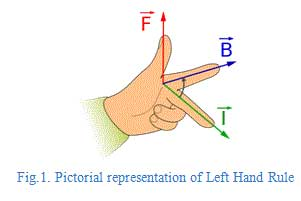
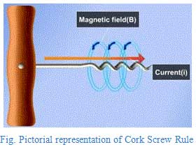
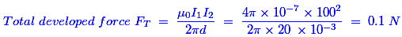
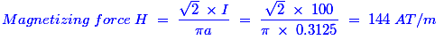
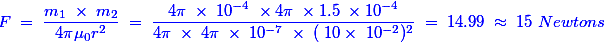
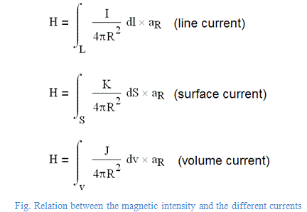

- A conductor of length L has carrying electric current I passing through it, when it is placed parallel to strong magnetic field. The force experienced by the conductor will be
The force can be found with the given expression F = I × L × B × sinθ and θ is the angle between I and B. When that electric current carrying conductor is placed parallel to the magnetic field, then the angle between electric current and magnetic field is zero. So, sinθ = sin0° = 0. Hence, the force experienced by the conductor is zero.
- The force between two long parallel conductors is inversely proportional to
If the electric current is flowing through the two different conductors with the distance of ‘d’ at the same direction of the electric current flow on that conductor, then the force between the two conductors is directly proportional to the product of the currents and inversely proportional to the distance between the two conductors.
- In the left hand rule, forefinger always represents
 Thumb finger represents the direction of force, Fore finger represents the direction of magnetic field, middle finger represents the direction of current. - A wire carrying electric current is bent in the form of a circular loop. Then the magnetic field around each portion of the wire will be
Suppose the straight wire is bent in the form of a circular loop, electric current flows through every point on the wire that would give rise to the magnetic field appearing as straight lines at the center of the circular loop. By applying the right hand rule, it is easy to check that every section of the wire contributes to the magnetic field lines in the same direction within the loop.
- Cork Screw rule is used to find
The direction in which the head of the cork screw rotates that would give the direction of the magnetic field or magnetic force of lines. The shape of this magnetic field is circular and the direction of magnetic field is clock-wise.
 - Two long parallel conductors carry 100 A. If the conductors are separated by 20 mm, the force per meter of length of each conductor will be
Given data: Current I1 and I2 = 100 Amps; Distance = 20 mm = 20 × 10-3 m; Force = ?
We know that the force is found by the following expression.
 - The field at any point on the axis of a electric current carrying coil will be
A continuous electric current in a electric current carrying coil is divided into multiple electric current elements. Using the superposition principle and the Biot-Savart’s Law, each discrete element generates its own magnetic field and when it is integrated with each field that produces a resultant field and it is aligned parallel to the axis of the coil.
- Two straight parallel conductors carry equal currents in opposite direction. The force between them is
Hints: When two electric current carrying conductors are placed parallelly, there will be a force acting between them. The force is attractive if direction of currents in the conductor is same and it is repulsive if the direction of the currents is opposite. This can easily be explained by Right hand rule.
- While comparing magnetic field and electric circuits, the point of dissimilarity exists while considering
Flow of electric current in an electric circuit involves continuous expenditure of energy but energy is needed in a magnetic circuit only creating the flux initially but not for maintaining it.
- A wire 2.5 m long is bent into a square. A electric current of 100 A flowing through the wire will produce a magnetizing force at the center of the square, equal to
Hints: Given data: Wire length ‘L’ = 2.5 m; Current ‘I’ = 100 A; Magnetizing force ‘H’ = ?. In square, length of each side; 2a = L / 4 ⇒ a = 2.5 / 8 = 0.3125
 - Magnetism of a magnet can be destroyed by
The above all methods could destroy the strength of the magnet.
- The change of cross sectional area of conductor in magnetic field will affect
We know that the cross sectional area is inversely proportional to the resistance of the conductor. In magnetic circuits, reluctance is analogues to the resistance. Hence, the resistance and reluctance would affect in the same way.
- Substance having permeability less than the permeability of free space, are known as
Diamagnetic material creates a magnetic field in opposition to an externally applied magnetic field and it is not a permanent magnet. Hence, its magnetic permeability is less than the permeability of free space.
- A point pole has a strength of 4π × 10-4 weber. The force in newtons on a point pole of 4π × 1.5 × 10-4 weber placed at a distance of 10 cm from it will be
Given data: Pole strength m1 = 4π × 10-7 Weber; m2 = 4π × 1.5 × 10-4; r = 10 cm.
We know that the force is found by the below expression,
 - Susceptibility is positive for
Magnetic susceptibility is the degree of magnetization of a material response to an applied magnetic field. If magnetic susceptibility is positive then the material can be paramagnetic, ferromagnetic or anti ferromagnetic. Alternatively, if the magnetic susceptibility is negative, then the material is diamagnetic.
- Biot-Savart's law states the relation between magnetic intensity and
Biot-Savart's law states that the differential magnetic field intensity dH produced at a point P by the differential electric current element Idl. This is the only one law is available to relate the magnetic intensity and the different type of electric current distribution. The given equations show the different relations between the magnetic intensity and the currents.
 - The bar magnet has
Under construction
- The magnetisation and applied field in ferromagnetic materials are related
When a ferromagnetic material is magnetized in one direction, it will not come back to zero magnetization even the magnetizing field is removed. That is why the material follows a non-linear magnetization curve when the magnetization starts from zero field value.
- Temporary magnets are used in
Temporary magnets are nothing but the electromagnets. Those magnets are used in lots of electrical appliance such as alternator, synchronous motors, etc. Because, for a large system, we could not create a permanent magnet and even if we create the permanent magnet, the life of that magnet is very less. That is why we usually use the electromagnet for that application.
- A degaussing is the process of
Degaussing is the process of de-magnetizing or eliminating an unwanted magnetic field. Due to magnetic hysteresis, it is generally not possible to reduce a magnetic field completely to zero. But degaussing typically induces a very small known field to eliminate the unwanted magnetic field.
Design with  by SARU TECH
by SARU TECH
www.sarutech.com
Content Credited to electrical4u.com
Online Electrical Engineering Study Site